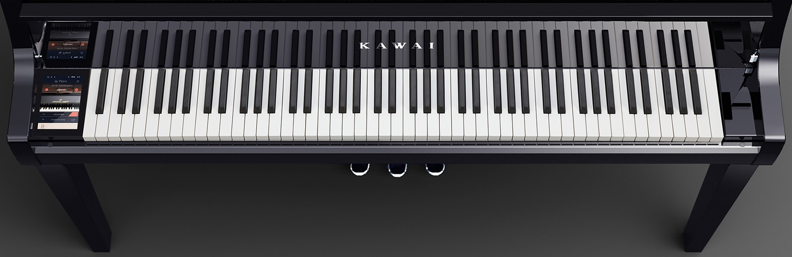

For starters, it is useful to familiarize yourself with the use of a piano keyboard. Suppose you are sitting at a piano and do not know a single note. Here's what you see:
The keyboard consists of black and white keys, and black are arranged in groups of two and three, or, we can say, pairs and triples. This grouping makes it easier to find any desired note. For example, the nearest white key to the left of a pair of black keys is do, or, using the letters of the Latin alphabet, C. If you move from C in the order of the Latin alphabet, the nearest white key to the left of the triplet of black, is indicated by the letter F (or fa). All notes can be indicated in double: letters of the Latin alphabet or names do, re, mi, fa, etc. The illustration below shows the correspondence of the names of notes and their Latin notation:

On the standard keyboard 8 notes do (C). The note C in the centre of the keyboard, or the fourth on the left, is called "C of the first octave / middle C". Although the piano keyboard looks very large, in fact it consists of several repetitions of the same group of notes. Five different black and seven different white keys are those twelve tones based on which in music for centuries the melodies and harmonies of all those symphonies and songs that you just heard were composed.
Task 1: If you are in front of instrument now, try playing all twelve notes, starting from do (C) of the first octave, moving from left to right or vice versa.
You'll notice that the sound of the white keys is no different from the sound of the black ones: if you close your eyes and try to distinguish sound by pressing a white key or a black one, you will hardly be able to do it (of course, if you do not have an absolute hearing when you hear exactly which one note play). The question arises: why do we need black and white keys?
There are two main reasons. First, if all the keys were white, then the keyboard would be half wider. Black keys are so inserted between the white ones that essentially do not take up space. Imagine only that you need to try to put a piano that has 88 only white keys (which is a standard number of keys) of the usual width, into your room! Even if your room is spacious enough for this, try to imagine how you would play it without a chair with wheels. Secondly, thanks to space-saving black keys, it is possible to play one octave, or the distance from one do (C) to another, or from one re (D) to another. The octave interval is very important, because it can double any particular sound. Having learned to play melodies with different fingers of the right hand, you can find it more interesting in some places to play them in an octave.
Task 2: All you need to know now is the white key designation: do (C), re (D), mi (E), etc. Press any keys and try to name them. You will be surprised how soon you will do it without the slightest difficulty.
Now let's define the names for the black keys:
Their name is formed from the whites closest to them. The first black key on which the arrow points is between the notes do(C) and re(D) and can be called in two ways: do-diesis(C#) and re-bemolle(Db).
The sharp/#/diesis indicates the note's pitch is increased by a half-ton, and the flat/b/bemolle is correspondingly a half-tone sound reduction. Thus, the difference between the notes do(C) and re(D) is a tone. More about this we will talk in the next lessons.
The second arrow indicates the re-diesis(D #)/mi-bemolle(Eb) key, etc.

Task 3: Give the name to the black keys yourself and check the correctness of your judgments according to the picture.